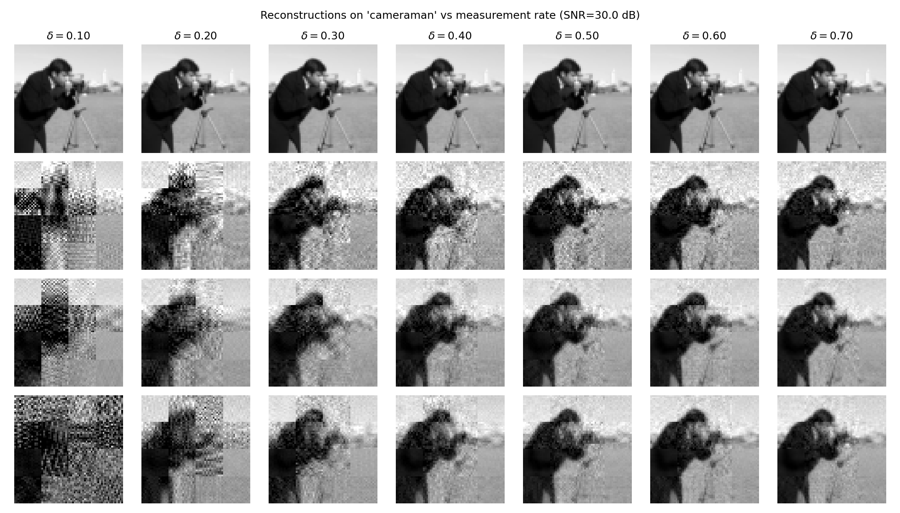
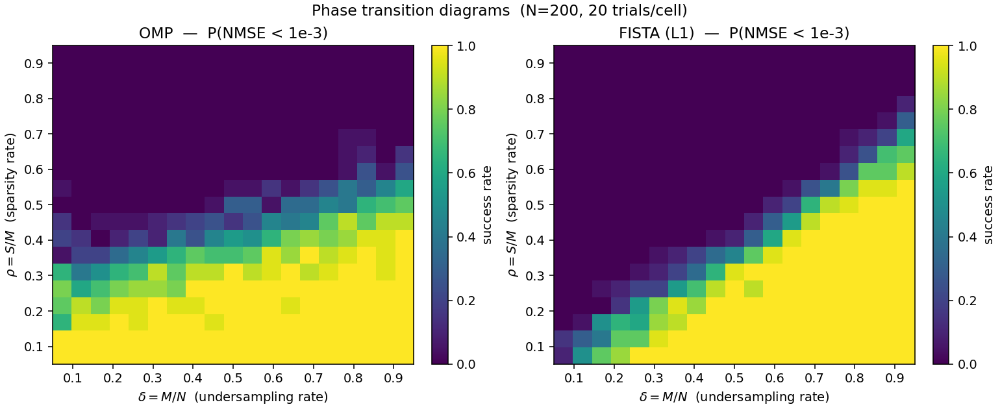
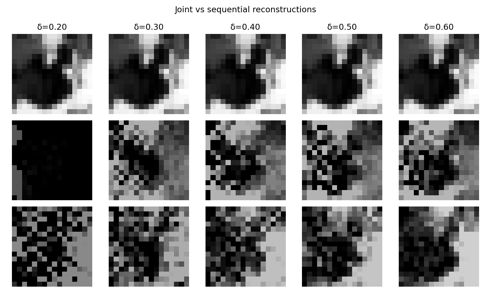

our framework: Simultaneous Illumination Normalization and Sparse Image Compression via Unfolded Recovery
Thayer School of Engineering, Dartmouth College
ENGS 109 final project · NeurIPS-format manuscript, 2026
Abstract
The traditional camera pipeline samples at Shannon–Nyquist rates, compresses to a sparse representation, and only afterwards performs illumination correction on the decoded image. This sequential ordering discards information: sparse recovery applied to a signal whose dynamic range is dominated by an unknown multiplicative illumination field has weaker recovery guarantees than the same recovery applied to the underlying reflectance. We formulate our framework, a single inverse problem in the joint variables of DCT-domain reflectance coefficients and a smooth per-column illumination field, and solve it by block-coordinate alternation between a learned-iterative-shrinkage step on the coefficients and a closed-form ridge step on the illumination. Across four experiments on a 5-image natural-scene set — an empirical Donoho–Tanner phase transition, a multi-image rate–distortion sweep, a deep-unfolded LISTA solver, and a per-scene ablation against a sequential CS-then-illumination-correct baseline — we find that the joint formulation outperforms the sequential one by up to +4.7 dB PSNR on textured scenes under an 8× illumination gradient, and that a $K{=}10$ unrolled LISTA matches what FISTA needs 22 iterations to reach. We also report a clear failure mode: on near-uniform scenes (moon) the joint $g$-update lacks signal to estimate gain from and the method degrades by $\sim 8$ dB — a scene-dependence that, to our knowledge, the prior CS+ISP literature does not report.
Method overview
The forward model is the standard compressive-sensing measurement $\boldsymbol{y} = \boldsymbol{A}\boldsymbol{x} + \boldsymbol{w}$ with $\boldsymbol{A} \in \mathbb{R}^{M\times N}$, $M \ll N$, and bounded noise $\boldsymbol{w}$. The reflectance $\boldsymbol{s}$ is assumed $S$-sparse in a 2D-DCT basis $\boldsymbol{\Psi}$. In a low-light or HDR scene the RAW signal is the product of reflectance and a smooth spatial illumination field, $\boldsymbol{x} = \boldsymbol{s} \odot \boldsymbol{g}$.
Joint objective
Rather than recover $\boldsymbol{x}$ first and divide out $\boldsymbol{g}$ afterwards, we optimize a single objective in $(\boldsymbol{c}, \boldsymbol{g})$:
$$ \min_{\boldsymbol{c},\boldsymbol{g}}\; \tfrac{1}{2} \big\| \boldsymbol{A}\,\mathrm{diag}(\boldsymbol{g})\, \boldsymbol{\Psi}\boldsymbol{c} - \boldsymbol{y} \big\|_2^2 + \lambda_c \|\boldsymbol{c}\|_1 + \lambda_g \|\nabla \boldsymbol{g}\|_2^2. $$The problem is multiplicatively bilinear in $(\boldsymbol{c}, \boldsymbol{g})$ — non-convex jointly, convex in each block individually — so we alternate:
- c-step. With $\boldsymbol{g}$ fixed, the effective sensing matrix is $\boldsymbol{A}_{\text{eff}} = \boldsymbol{A}\,\mathrm{diag}(\boldsymbol{g})\,\boldsymbol{\Psi}$ and the $\boldsymbol{c}$-update is a Lasso, solved by FISTA — or by a $K{=}10$-layer LISTA at deployment.
- g-step. With $\boldsymbol{c}$ fixed, the $\boldsymbol{g}$-update is a ridge regression with closed form $\boldsymbol{g}^\star = (\boldsymbol{B}^\top \boldsymbol{B} + \lambda_g \boldsymbol{L})^{-1} \boldsymbol{B}^\top \boldsymbol{y}$.
Deep-unfolded c-step (LISTA)
To amortize the c-step we replace the FISTA inner loop with $K$ unrolled ISTA layers whose encoder, recurrent, and threshold parameters are learned:
$$ \boldsymbol{c}^{(k+1)} = \mathcal{S}_{\theta_k}\!\big( \boldsymbol{W}_t \boldsymbol{c}^{(k)} + \boldsymbol{W}_e \boldsymbol{y} \big),\quad k=0,\dots,K-1. $$Initializing $\boldsymbol{W}_e = (1/L)(\boldsymbol{A}\boldsymbol{\Psi})^\top$, $\boldsymbol{W}_t = \boldsymbol{I} - (1/L)(\boldsymbol{A}\boldsymbol{\Psi})^\top \boldsymbol{A}\boldsymbol{\Psi}$, and $\theta_k = \lambda/L$ exactly reproduces ISTA at training-step zero, so the network is a strict generalization of the classical solver.
Results
Rate–distortion across natural images Exp. 2
FISTA and ADMM beat OMP by 2–3 dB across the useful measurement-rate range. 5-image test set (cameraman, astronaut, coins, page, moon) at 64×64 grayscale, 16×16 DCT blocks, Gaussian sensing, SNR = 30 dB. Hover for exact values; toggle solvers via the legend.
| $\delta = M/N$ | OMP | FISTA | ADMM |
|---|---|---|---|
| 0.10 | 15.46 ± 4.4 | 16.67 ± 4.8 | 11.23 ± 3.1 |
| 0.20 | 17.42 ± 4.3 | 19.39 ± 4.5 | 17.62 ± 4.8 |
| 0.30 | 19.15 ± 4.0 | 21.73 ± 4.3 | 21.27 ± 4.6 |
| 0.40 | 20.42 ± 3.7 | 23.64 ± 4.1 | 23.47 ± 4.4 |
| 0.50 | 21.73 ± 3.2 | 25.06 ± 3.9 | 24.98 ± 4.0 |
| 0.60 | 23.50 ± 3.0 | 26.43 ± 3.8 | 26.37 ± 3.9 |
| 0.70 | 24.89 ± 3.0 | 27.57 ± 3.5 | 27.45 ± 3.7 |
PSNR in dB, mean ± std across the 5-image set.

Donoho–Tanner phase transition Exp. 1

LISTA at matched compute Exp. 3
A $K{=}10$-layer learned solver matches what FISTA needs 22 iterations to reach — a $\sim 2.2\times$ iteration speedup at equivalent recovery quality. Log-scale NMSE; lower is better.
Joint vs. sequential under an illumination gradient Exp. 4 · headline
Aggregate PSNR vs measurement rate for the joint and sequential pipelines under an 8× horizontal illumination gradient. Both curves are scored against the illumination-normalized scene. Shaded bands show ±1 std across the 5-scene set.
Per-scene PSNR gain $\Delta = \text{joint} - \text{sequential}$ (dB). Hover any bar for the exact value; the moon column reveals the failure mode where the joint $g$-update is rank-deficient.
| $\delta$ | cameraman | astronaut | coins | page | moon |
|---|---|---|---|---|---|
| 0.20 | +2.87 | +0.54 | −1.02 | −0.79 | −10.03 |
| 0.30 | +4.65 | +0.18 | −1.73 | −0.48 | −9.51 |
| 0.40 | +1.13 | +1.84 | +0.39 | −0.23 | −7.76 |
| 0.50 | +1.08 | +2.31 | +0.74 | +0.74 | −9.05 |
| 0.60 | +3.07 | +2.21 | +0.32 | +0.43 | −8.37 |
Per-scene PSNR gain $\Delta = \text{joint} - \text{sequential}$ (dB). Joint wins on textured scenes (cameraman, astronaut) and is a wash on moderate-content scenes; on near-uniform moon the joint $g$-update becomes rank-deficient and degrades by $\sim 8$ dB.

Summary
- Phase transition. Sharp empirical Donoho–Tanner transition for both solvers; crossover near $\delta \approx 0.65$.
- Rate–distortion. FISTA / ADMM beat OMP by 2–3 dB across the useful $\delta$ range.
- LISTA. A 10-layer learned solver matches FISTA at 22 iterations — $\sim 2.2\times$ iteration speedup.
- Joint vs sequential. Up to +4.7 dB on textured scenes; catastrophic failure on near-uniform scenes is the most informative limitation.
Read the paper
Poster
Reproducing the experiments
git clone https://github.com/SadeekFarhan21/Snapshot-RAW-Enhance
cd Snapshot-RAW-Enhance
python3 experiments/phase_transition.py # ~8 min CPU
python3 experiments/rate_distortion.py # ~12 s
python3 experiments/train_lista.py # ~4 min CPU
python3 experiments/joint_vs_sequential.py # ~5 sBibTeX
@misc{sadeek2026jointcs,
author = {Farhan Sadeek},
title = {{our framework}: Simultaneous Illumination Normalization
and Sparse Image Compression via Unfolded Recovery},
year = {2026},
howpublished = {ENGS 109 final project,
Thayer School of Engineering, Dartmouth College},
url = {https://github.com/SadeekFarhan21/Snapshot-RAW-Enhance}
}